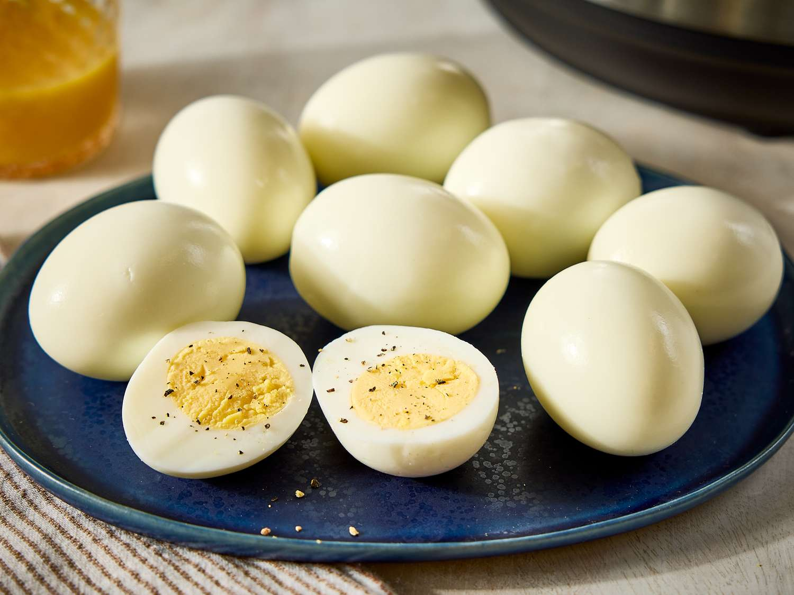

Pressure Cooker Hard-Boiled Eggs

Description
Pressure cooker hard-boiled eggs aren't any quicker to make (the pressure cooker's usual claim to fame), but here's why it's great: it actually makes fresh eggs easy to peel! If you happen to raise chickens or have access to really fresh eggs, a pressure cooker is the best way to make hard-cooked eggs.
Ingredients
- 2 cups water, or as needed
- 8 fresh eggs
- 4 cups cold water
- 4 cups ice cubes
Steps
- Gather the ingredients
- Fill a pressure cooker with the minimum amount of water specified by the manufacturer. Place eggs in the steamer basket above the water. Seal the lid and bring the pressure cooker up to low pressure
- Cook, maintaining low pressure, for 6 minutes. Remove the pressure cooker from heat and allow the pressure to drop for 5 minutes
- Combine cold water and ice in a large bowl. Use the quick-release method to open the pressure cooker. Transfer hot eggs to ice water using an oven mitt or spoon. Cool completely, about 30 minutes
- Peel eggs
- Serve and enjoy
Return to Home